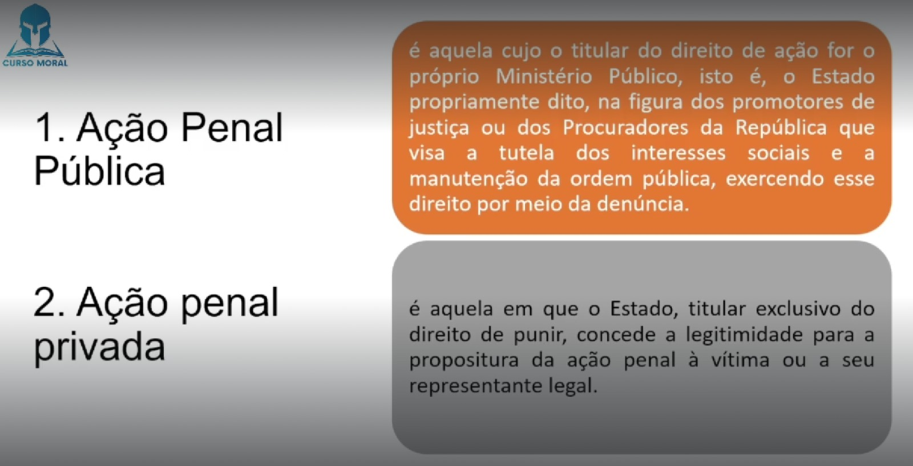

⚖ TÍTULO I - DA APLICAÇÃO DA LEI PENAL MILITAR (Art. 1º ao 28)
⚖ TÍTULO II - DO CRIME (Art. 29 ao 47)
⚖ TÍTULO III - DA IMPUTABILIDADE PENAL (Art. 48 ao 52)
⚖ TÍTULO IV - DO CONCURSO DE AGENTES (Art. 53 e 54)
⚖ TÍTULO V - DAS PENAS (Art. 55 ao 109)
⚖ TÍTULO VI - DAS MEDIDAS DE SEGURANÇA (Art. 110 e 120)
TÍTULO VII - DA AÇÃO PENAL (Art. 110 e 120)
🎥 26. Da Ação Penal
Ação penal equivale ao direito de provocar o Estado na sua função jurisdicional para a aplicação do direito penal objetivo em um caso concreto. Também é o direito do Estado, único titular do "jus puniendi", de atender a sua pretensão punitiva.
Em outras palavras, o conceito de ação penal consiste no direito de se exigir ou pedir a tutela jurisdicional do Estado, tendo como objetivo a resolução de um conflito decorrente de um fato concreto.
Art. 121. A ação penal sòmente pode ser promovida por denúncia do Ministério Público
da Justiça Militar. (Ação Penal Pública)
Art. 122.
Nos crimes previstos nos arts. 136 a 141, a ação penal, quando o agente for
militar ou assemelhado, depende da requisição do Ministério Militar
a que aquêle estiver subordinado; no caso do art. 141, quando o agente fôr civil e não houver co-autor militar, a requisição será do Ministério da Justiça.
Art. 136: Hostilidade contra país estrangeiro
Art. 137: Provocação a país estrangeiro
Art. 138: Ato de jurisdição indevida
Art. 139: Violação de território estrangeiro
Art. 140: Entendimento para empenhar o Brasil à neutralidade ou à guerra
Art. 141: Entendimento para gerar conflito ou divergência com o Brasil (Civil)
📌 Ação Penal Pública: é aquela cujo o titular do direito de ação for o próprio Ministério Público, isto é, o Estado propriamente dito, na figura dos promotores de justiça ou dos Procuradores da Repíblica que visa a tutela dos interesses sociais e a manutenção da ordem pública, exercendo esse direito por meio da denúncia.
📌 Ação Penal Privada: é aquela em que o Estado, titular exclusivo do direito de punir, concede a legitimidade para propositura da ação penal à vítima ou a seu representante legal.

A Ação Penal Pública incondicionada é aquela na qual o Ministério Público não precisa de autorização de ninguém para oferecer a denúncia. Ou seja, na ação penal pública incondicionada não é necessário que a vítima se manifeste no processo.
Nota: Quase todos os crimes militares se encaixam aqui.
nada mais é do que uma “autorização” da vítima ao Ministério Público para que o autor do delito seja processado. A legitimidade da ação penal continua sendo do Ministério Pública, tanto é assim que seu nome continua sendo Ação Penal Pública.
As ações penais públicas condicionadas à requisição são aquelas em que a titularidade é do MP, mas a investigação e posterior ação penal dependem de uma prévia manifestação de vontade do Ministro da Justiça.
Ação penal privada exclusiva é aquela promovida por meio de queixa-crime proposta pela vítima (ofendido) ou seu representante legal
são aqueles casos em que, diversamente das ações penais privadas exclusivas, a lei não prevê a ação como privada, mas sim como pública (condicionada ou incondicionada).
Nota: Quando o MP se torna moroso, omisso, não fez o que deveria, abre a possibilidade da ação se tornar privada, mais subsidiária da Pública.
a proposta de queixa cabe apenas ao ofendido, ou seja, é intransferível, não sendo possível nem mesmo a intervenção de representante legal, ou sucessão no caso de morte (quando resta extinta a punibilidade do ofensor) ou ausência.